01. DASHBOARD
Modelo Analítico del Proceso de Educación – Menú Principal¶
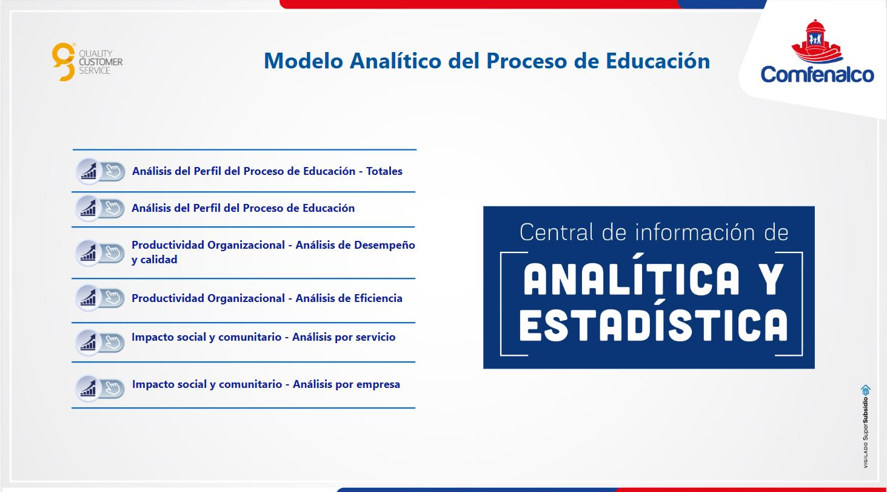
Objetivo de la Visualización: Actuar como portada y panel de navegación central para todo el sistema de analítica y estadística del proceso de Educación. Desde este menú, el usuario puede acceder rápidamente a los seis tableros temáticos que conforman el modelo analítico: visión global de perfiles, productividad organizacional (desempeño y eficiencia) e impacto social (por servicio y por empresa). Facilita la orientación del público y refuerza, a nivel visual, la identidad corporativa de la central de información.
Estructura y Elementos Principales¶
| Sección | Descripción |
|---|---|
| Encabezado | Modelo Analítico del Proceso de Educación en tipografía destacada, flanqueado por el isologo de Quality Customer Service (izquierda) y el escudo de Comfenalco (derecha). Refuerza la autoría institucional. |
| Lista de Navegación (lado izquierdo) | Seis botones alineados verticalmente, cada uno con un icono de gráfico + cursor y un título específico: 1. Análisis del Perfil del Proceso de Educación – Totales 2. Análisis del Perfil del Proceso de Educación 3. Productividad Organizacional – Análisis de Desempeño y calidad 4. Productividad Organizacional – Análisis de Eficiencia 5. Impacto social y comunitario – Análisis por servicio 6. Impacto social y comunitario – Análisis por empresa |
| Panel Destacado (lado derecho) | Bloque azul marino con la leyenda “Central de información de ANALÍTICA Y ESTADÍSTICA”. Comunica el propósito del sistema y añade contraste visual. |
| Banda inferior | Pie de página con líneas de color institucional (rojo/azul), que cierra la composición y mantiene la coherencia gráfica con los demás tableros. |
Funcionalidades Clave¶
- Navegación Directa: cada botón enlaza al tablero correspondiente, reduciendo la curva de aprendizaje y el tiempo de exploración.
- Jerarquía Visual Clara: la separación en cuadrantes (navegación izquierda / mensaje institucional derecha) orienta la atención y evita saturación.
- Identidad Corporativa: el uso consistente de logotipos, paleta cromática y tipografías oficiales refuerza la marca de la central de analítica.
- Escalabilidad: el diseño admite la adición de nuevas secciones sin romper la armonía (p. ej., inserción de un séptimo botón).
Beneficios para la Gestión¶
- Experiencia de Usuario (UX) Optimizada: un punto de entrada único simplifica el recorrido de analistas, directivos y demás stakeholders.
- Coherencia Informativa: al estandarizar el acceso a los tableros, se minimiza la dispersión de enlaces y versiones no controladas.
- Comunicación Institucional: la portada funciona como tarjeta de presentación de la estrategia de datos, fortaleciendo la cultura de decisiones basadas en evidencia.
Análisis del Perfil del Proceso de Educación – Totales¶
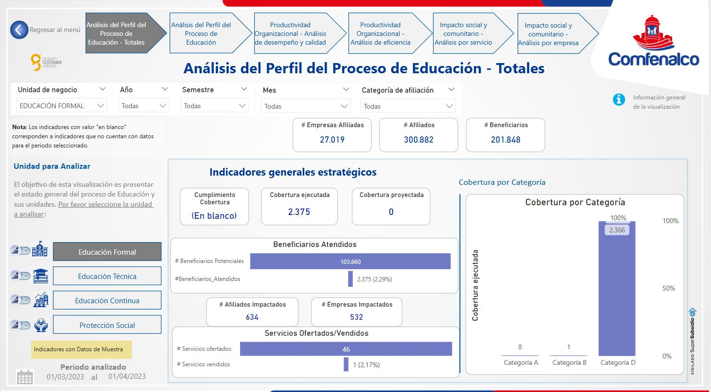
Objetivo de la Visualización¶
Ofrecer una panorámica integral del estado general del proceso de Educación y sus unidades, exponiendo los principales indicadores estratégicos de cobertura, beneficiarios y servicios. La vista permite filtrar la información y evaluar rápidamente el desempeño global para apoyar la planeación y las decisiones tácticas.
Estructura y Elementos Principales¶
| Sección | Descripción |
|---|---|
| Panel Lateral Izquierdo | Bloque dedicado a la selección de la Unidad para Analizar. Contiene una breve explicación del propósito de la visualización y cuatro botones con iconos para elegir Educación Formal, Educación Técnica, Educación Continua y Protección Social. Incluye una leyenda que resalta si los datos corresponden a una muestra. |
| Tarjetas KPI Superiores | Tres tarjetas alineadas que muestran los totales de empresas afiliadas, afiliados y beneficiarios. Sirven como referencia rápida del alcance institucional. |
| Contenedor “Indicadores generales estratégicos” | Área central que agrupa: tarjetas de cobertura (cumplimiento, ejecutada, proyectada), barras de Beneficiarios Atendidos, tarjetas de impacto (afiliados y empresas) y barras de Servicios Ofertados/Vendidos. Todo se presenta con formatos visuales uniformes para facilitar la lectura comparativa. |
| Gráfico “Cobertura por Categoría” | Gráfico de barras verticales que visualiza la proporción de cobertura ejecutada para cada categoría de afiliación, con etiquetas de porcentaje para una interpretación inmediata. |
| Icono de Información | Botón contextual que despliega detalles sobre la interpretación de la vista, ayudando al usuario a comprender definiciones y supuestos. |
| Pie de Página | Banda inferior con la fecha del periodo analizado y líneas de color corporativo que enmarcan la composición, asegurando consistencia gráfica con el resto del tablero. |
Beneficios para la Gestión¶
- Visión Ejecutiva Unificada: Centraliza los indicadores clave del proceso educativo en un único tablero, reduciendo tiempos de consulta y reporte.
- Análisis Dinámico: Los filtros permiten segmentar la información por periodo, unidad o categoría, facilitando diagnósticos específicos sin necesidad de construir informes adicionales.
- Detección de Brechas de Cobertura: La combinación de KPI de cobertura y el gráfico por categoría ayuda a identificar áreas con bajo alcance y priorizar acciones correctivas.
- Monitoreo de Impacto Institucional: Las tarjetas de afiliados, beneficiarios y empresas impactadas ofrecen una medición continua del valor social generado.
- Soporte a la Toma de Decisiones: La disponibilidad de datos consolidados y actualizados favorece decisiones informadas sobre asignación de recursos, ampliación de servicios y estrategias de crecimiento.
Análisis del Perfil del Proceso de Educación – Totales (Educación Técnica)¶

Objetivo de la Visualización¶
Brindar una visión consolidada del estado general de la unidad de Educación Técnica, resaltando los principales indicadores de cobertura, población atendida y oferta de servicios. Esta vista sirve como punto de partida para evaluar el desempeño global de la unidad, identificar brechas y apoyar la toma de decisiones tácticas.
Estructura y Elementos Principales¶
| Sección | Descripción |
|---|---|
| Panel Lateral Izquierdo | Área dedicada a la elección de la Unidad para Analizar, con una breve explicación del propósito del tablero. Se muestran botones con iconos para Educación Formal, Educación Técnica (seleccionado), Educación Continua y Protección Social, además de una leyenda que advierte cuando la visualización contiene datos de muestra. |
| Tarjetas KPI Superiores | Tarjetas que resumen los totales institucionales de empresas afiliadas, afiliados y beneficiarios, proporcionando contexto global antes de profundizar en los datos de la unidad específica. |
| Contenedor “Indicadores generales estratégicos” | Bloque central que agrupa: tarjetas de cobertura (cumplimiento, ejecutada y proyectada), barras de afiliados atendidos y beneficiarios atendidos, tarjetas de impacto (afiliados y empresas) y barras de servicios ofertados/vendidos. Todo se presenta con un diseño uniforme para facilitar la comparación de métricas clave. |
| Gráfico “Cobertura por Categoría” | Gráfico de barras que visualiza la distribución de la cobertura ejecutada entre las categorías de afiliación para la unidad de Educación Técnica, con etiquetas de porcentaje para una interpretación rápida. |
| Icono de Información | Botón de ayuda contextual que despliega detalles sobre la interpretación de los indicadores y definiciones utilizadas en la vista. |
| Pie de Página | Banda inferior que muestra el periodo analizado y líneas de color corporativo, garantizando coherencia visual con el resto de tableros. |
Beneficios para la Gestión¶
- Monitoreo Específico de Educación Técnica: Centraliza los indicadores clave de la unidad, permitiendo un diagnóstico rápido del desempeño y la cobertura alcanzada.
- Segmentación Dinámica: Los filtros posibilitan ajustar el análisis por periodo, categoría o subunidad, facilitando la identificación de tendencias y áreas críticas.
- Detección de Oportunidades de Mejora: El contraste entre cobertura y servicios ofertados/vendidos ayuda a reconocer brechas y orientar acciones de optimización.
- Contexto Institucional Integrado: Las tarjetas globales ofrecen una visión del impacto organizacional, situando los resultados de Educación Técnica dentro del panorama general.
- Soporte a la Planificación Estratégica: La disponibilidad de datos consolidados respalda decisiones sobre recursos, expansión de programas y alineación de la oferta con la demanda real.
Análisis del Perfil del Proceso de Educación – Totales (Educación Continua)¶
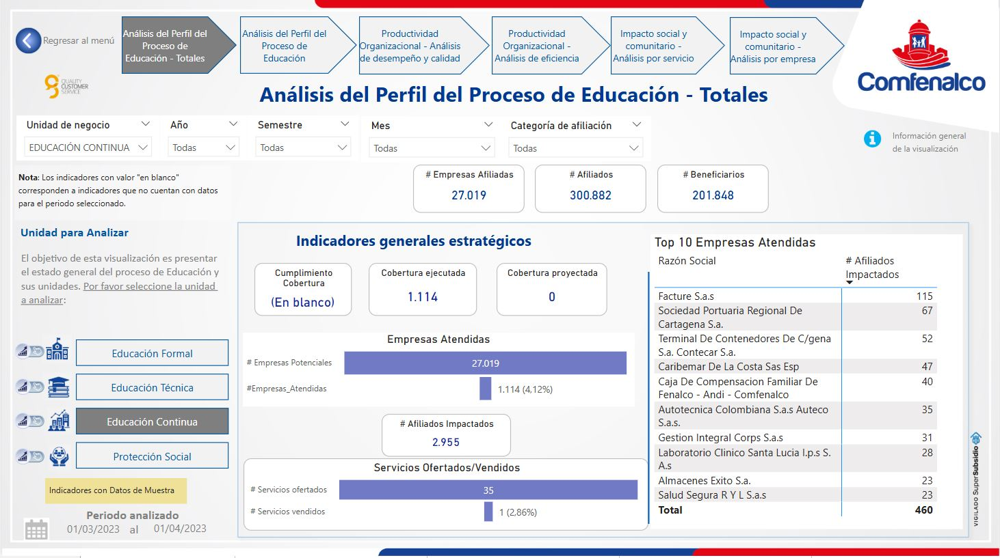
Objetivo de la Visualización¶
Proporcionar una visión integral del estado general de la unidad de Educación Continua, resaltando la cobertura, el impacto en empresas y afiliados, y la oferta de servicios. Esta vista permite evaluar el desempeño global, identificar brechas y respaldar decisiones tácticas relacionadas con la formación continua.
Estructura y Elementos Principales¶
| Sección | Descripción |
|---|---|
| Panel Lateral Izquierdo | Área de selección de la Unidad para Analizar con cuatro botones (Educación Formal, Educación Técnica, Educación Continua, Protección Social). Incluye una explicación breve del propósito de la vista y una leyenda que señala si los datos son de muestra. |
| Tarjetas KPI Superiores | Tarjetas que muestran los totales institucionales de empresas afiliadas, afiliados y beneficiarios, proporcionando contexto general antes de profundizar en la unidad específica. |
| Contenedor “Indicadores generales estratégicos” | Bloque central que agrupa: tarjetas de cobertura (cumplimiento, ejecutada y proyectada), barras de empresas atendidas, tarjetas del impacto en afiliados, y barras de servicios ofertados/vendidos. Presenta un diseño uniforme que facilita la comparación visual. |
| Cuadro “Top 10 Empresas Atendidas” | Tabla a la derecha con las principales empresas atendidas ordenadas por número de afiliados impactados. Ayuda a identificar los clientes corporativos más relevantes para la unidad de Educación Continua. |
| Icono de Información | Botón de ayuda contextual que despliega definiciones y pautas para interpretar los indicadores mostrados. |
| Pie de Página | Franja inferior con el periodo analizado y líneas de color corporativo, asegurando coherencia gráfica con el resto del tablero. |
Beneficios para la Gestión¶
- Visión Consolidada de Educación Continua: Centraliza los datos clave de la unidad, permitiendo un diagnóstico rápido del desempeño y la cobertura lograda.
- Análisis de Clientes Corporativos: El cuadro de empresas atendidas destaca los aliados estratégicos y facilita la priorización de esfuerzos comerciales y de fidelización.
- Segmentación Dinámica: Los filtros permiten explorar la información por periodos, categorías o subunidades, apoyando la detección de tendencias y oportunidades de mejora.
- Contexto Institucional Integrado: Las tarjetas globales sitúan los resultados de Educación Continua dentro del panorama general, posibilitando comparaciones con otras unidades.
- Soporte a la Planificación Estratégica: La vista ofrece datos consolidados y actualizados que son esenciales para la asignación eficiente de recursos y la expansión de programas formativos.
Análisis del Perfil del Proceso de Educación – Totales (Protección Social)¶
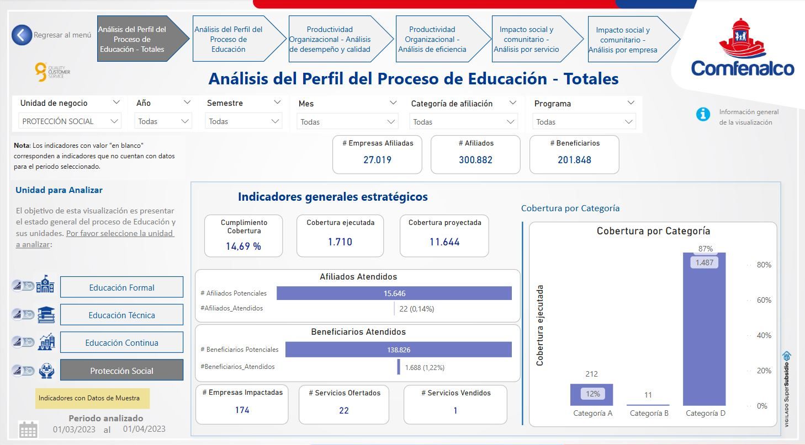
Objetivo de la Visualización¶
Ofrecer una panorámica consolidada del estado general de la unidad de Protección Social, resaltando la cobertura, el impacto en afiliados y beneficiarios, así como la oferta de servicios. La vista facilita la identificación de brechas y la toma de decisiones tácticas orientadas al fortalecimiento de los programas sociales.
Estructura y Elementos Principales¶
| Sección | Descripción |
|---|---|
| Panel Lateral Izquierdo | Área dedicada a la selección de la Unidad para Analizar, con botones para Educación Formal, Educación Técnica, Educación Continua y Protección Social (resaltado). Incluye una breve explicación del propósito de la vista y un aviso cuando se utilizan datos de muestra. |
| Tarjetas KPI Superiores | Tarjetas que muestran indicadores globales institucionales de empresas afiliadas, afiliados y beneficiarios, proporcionando contexto general antes de profundizar en la unidad específica. |
| Contenedor “Indicadores generales estratégicos” | Bloque central que agrupa tarjetas de cobertura, barras de afiliados y beneficiarios atendidos, métricas de impacto en empresas y servicios; todo presentado con un diseño uniforme para una lectura comparativa. |
| Gráfico “Cobertura por Categoría” | Gráfico de barras que ilustra la distribución de la cobertura ejecutada entre las categorías de afiliación, facilitando la identificación visual de los niveles de alcance. |
| Icono de Información | Botón contextual que despliega definiciones y notas metodológicas para interpretar los indicadores mostrados. |
| Pie de Página | Franja inferior con el periodo analizado y líneas de color corporativo que aseguran coherencia gráfica con el resto del tablero. |
Beneficios para la Gestión¶
- Visión Integral de la Unidad: Centraliza indicadores clave de Protección Social, permitiendo un diagnóstico rápido del alcance y desempeño.
- Segmentación Flexible: Los filtros ofrecen la posibilidad de analizar los resultados por periodo, programa o categoría, identificando tendencias específicas y oportunidades de mejora.
- Enfoque en Cobertura y Beneficio Social: La combinación de métricas de cobertura y beneficiarios atendidos ayuda a priorizar recursos y acciones hacia poblaciones con mayor necesidad.
- Contexto Organizacional: Las tarjetas globales sitúan los resultados de Protección Social dentro del panorama institucional, facilitando comparaciones con otras unidades.
- Apoyo a la Planificación Estratégica: Datos consolidados y actualizados respaldan decisiones sobre asignación presupuestal, expansión de programas y optimización de la oferta social.
Análisis del Perfil del Proceso de Educación – Totales de Negocio¶
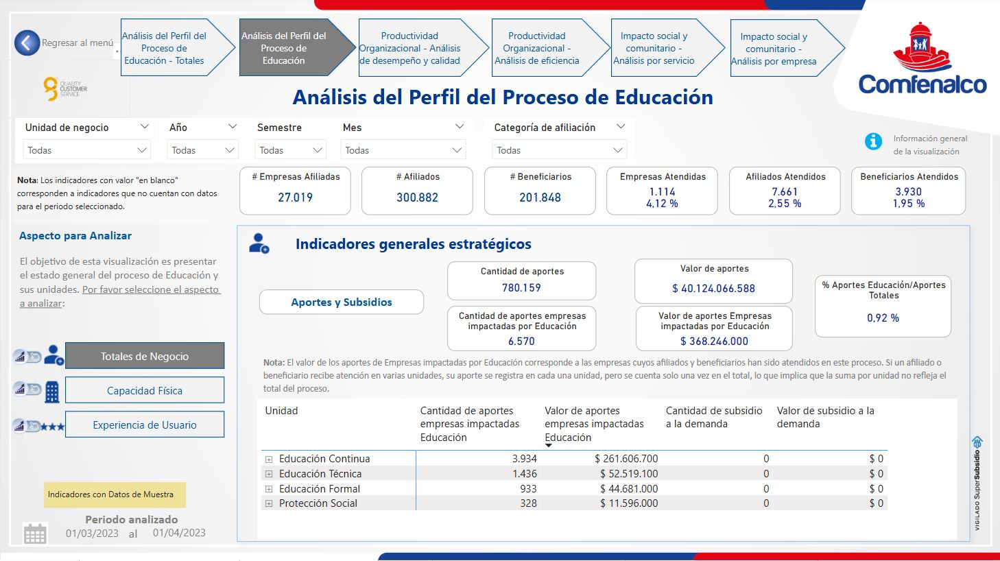
Objetivo de la Visualización¶
Presentar una perspectiva global de los aportes y subsidios asociados al proceso de Educación, destacando la relación entre empresas, afiliados y beneficiarios atendidos. La vista permite evaluar el impacto financiero y la distribución de los recursos, así como identificar las unidades con mayor participación en los aportes.
Estructura y Elementos Principales¶
| Sección | Descripción |
|---|---|
| Panel Lateral Izquierdo | Sección Aspecto para Analizar con botones para Totales de Negocio (seleccionado), Capacidad Física y Experiencia de Usuario. Incluye una breve explicación del propósito de la vista y una alerta cuando se utilizan datos de muestra. |
| Tarjetas KPI Superiores | Tarjetas que muestran los indicadores globales de empresas afiliadas, afiliados, beneficiarios, empresas atendidas, afiliados atendidos y beneficiarios atendidos, ofreciendo una referencia rápida del alcance institucional. |
| Contenedor “Indicadores generales estratégicos” | Bloque central que agrupa las métricas de Aportes y Subsidios: cantidad y valor de aportes, participación de la educación sobre los aportes totales y métricas específicas de empresas impactadas. Incluye una nota metodológica para interpretar correctamente los datos. |
| Tabla Detalle por Unidad | Tabla que desglosa, para cada unidad (Educación Continua, Educación Técnica, Educación Formal, Protección Social), la cantidad y el valor de aportes de empresas impactadas, junto con los indicadores de subsidio a la demanda. |
| Icono de Información | Botón contextual que ofrece definiciones y aclaraciones sobre los conceptos mostrados en la vista. |
| Pie de Página | Franja inferior con el periodo de análisis y líneas de color corporativo que enmarcan la composición, garantizando la coherencia gráfica con los demás tableros. |
Beneficios para la Gestión¶
- Visión Financiera Consolidada: Centraliza los datos de aportes y subsidios, facilitando el monitoreo del soporte económico al proceso educativo.
- Identificación de Unidades Clave: La tabla detallada permite detectar las unidades con mayor participación en los aportes, orientando estrategias de financiamiento y priorización de recursos.
- Análisis Dinámico: Los filtros proporcionan flexibilidad para segmentar la información por periodo, unidad o categoría, apoyando diagnósticos específicos y comparaciones históricas.
- Transparencia y Toma de Decisiones: La combinación de indicadores estratégicos y detalle por unidad respalda decisiones basadas en datos sobre asignación presupuestal y políticas de subsidio.
- Contexto Institucional Integrado: Las tarjetas KPI iniciales sitúan los resultados financieros dentro del panorama general del proceso educativo, favoreciendo la comprensión del impacto global.
Análisis del Perfil del Proceso de Educación – Capacidad Física¶
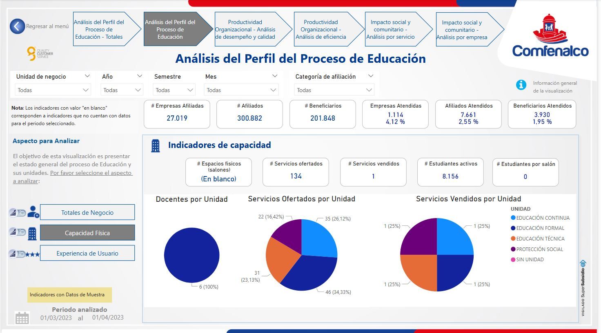
Objetivo de la Visualización¶
Mostrar, de forma sintética e interactiva, los principales indicadores de capacidad institucional (espacios físicos, servicios y estudiantes) y su distribución entre las diferentes unidades de negocio. La vista permite detectar la disponibilidad de recursos y el grado de utilización para orientar decisiones sobre ampliación, redistribución o mejora de la infraestructura educativa.
Estructura y Elementos Principales¶
| Sección | Descripción |
|---|---|
| Panel Lateral Izquierdo | Área Aspecto para Analizar con botones para Totales de Negocio, Capacidad Física (seleccionado) y Experiencia de Usuario. Incluye una breve nota sobre el objetivo de la vista y un aviso cuando los datos son de muestra. |
| Tarjetas KPI Superiores | Conjunto de tarjetas que resumen métricas de capacidad: espacios físicos disponibles, servicios ofertados y vendidos, estudiantes activos y estandarización de estudiantes por salón. |
| Bloque “Indicadores de capacidad” | Sección central que agrupa las tarjetas KPI y establece el contexto para las gráficas de distribución. |
| Gráfico “Docentes por Unidad” | Diagrama circular que muestra la proporción de docentes asignados a cada unidad de negocio, facilitando la detección de concentraciones o desequilibrios en recursos humanos. |
| Gráfico “Servicios Ofertados por Unidad” | Diagrama circular que refleja la distribución de servicios disponibles entre las unidades, permitiendo evaluar la amplitud y diversidad de la oferta educativa. |
| Gráfico “Servicios Vendidos por Unidad” | Diagrama circular que visualiza qué unidades concretan mayor número de servicios, indicando la efectividad comercial o la demanda real por área. |
| Leyenda de Unidades | Identifica, con código de color, a Educación Continua, Educación Formal, Educación Técnica, Protección Social y registros sin unidad asignada. |
| Icono de Información | Botón contextual que despliega definiciones y criterios de cálculo utilizados en los indicadores de capacidad. |
| Pie de Página | Franja inferior con la referencia temporal del análisis y líneas de color corporativo que aseguran la coherencia gráfica con el resto del tablero. |
Beneficios para la Gestión¶
- Visibilidad de Recursos Disponibles: Permite conocer, en un solo vistazo, la capacidad instalada y los recursos humanos vinculados a cada unidad.
- Identificación de Desbalance: Los diagramas circulares facilitan la detección de sobrecarga o subutilización de servicios y personal docente, apoyando la redistribución estratégica.
- Soporte a la Planificación de Infraestructura: Los indicadores sobre espacios físicos y estudiantes por salón orientan decisiones de inversión en aulas, equipamiento y ampliaciones.
- Evaluación de Eficiencia Comercial: Comparar servicios ofertados con vendidos ayuda a medir la efectividad en la conversión de la oferta educativa y a ajustar estrategias de promoción.
- Interactividad para Análisis Detallado: Los filtros permiten profundizar por periodo, unidad o categoría, ofreciendo flexibilidad en el diagnóstico y la generación de reportes.
Análisis del Perfil del Proceso de Educación – Experiencia de Usuario¶
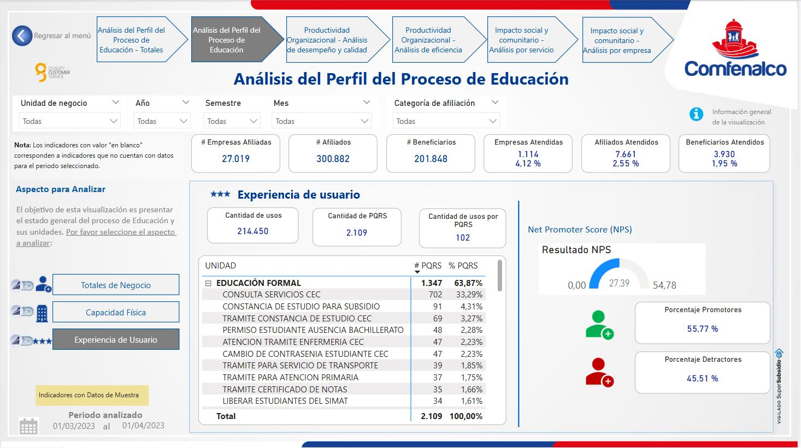
Objetivo de la Visualización¶
Proporcionar una lectura integral de la satisfacción y la interacción de los usuarios con los servicios educativos, a través de indicadores clave como cantidad de usos, PQR (Peticiones, Quejas y Reclamos) y Net Promoter Score (NPS). La vista facilita la detección de incidencias frecuentes, la medición de la lealtad de los usuarios y la identificación de áreas de mejora en la atención.
Estructura y Elementos Principales¶
| Sección | Descripción |
|---|---|
| Categoría de afiliación que actualizan todos los indicadores de forma dinámica. | |
| Panel Lateral Izquierdo | Área Aspecto para Analizar con botones para Totales de Negocio, Capacidad Física y Experiencia de Usuario (seleccionado). Incluye una breve explicación del propósito de la vista y un aviso cuando los datos son de muestra. |
| Tarjetas KPI Superiores | Tarjetas que resumen métricas institucionales de empresas afiliadas, afiliados, beneficiarios y coberturas generales, aportando contexto global. |
| Bloque “Experiencia de usuario” | Sección central que muestra tarjetas con la cantidad de usos, cantidad de PQR y proporción de usos por PQR, ofreciendo un panorama rápido de la interacción y las incidencias. |
| Tabla de PQR por Unidad | Tabla que detalla, para cada trámite o servicio, la cantidad y el porcentaje de PQR, resaltando los motivos principales de las solicitudes. |
| Indicador NPS | Medidor semicircular que representa el resultado de Net Promoter Score, acompañado de tarjetas que muestran el porcentaje de promotores y detractores. |
| Icono de Información | Botón contextual que despliega definiciones y criterios para interpretar correctamente los indicadores de satisfacción y PQR. |
| Pie de Página | Franja inferior con la referencia temporal del análisis y líneas de color corporativo que aseguran coherencia gráfica con el resto del tablero. |
Beneficios para la Gestión¶
- Monitoreo Integral de la Satisfacción: Reúne en un solo tablero las métricas fundamentales de experiencia de usuario, facilitando un seguimiento continuo.
- Detección de Causas Recurrentes: La tabla de PQR permite identificar rápidamente los trámites o servicios con mayores incidencias, orientando planes de mejora.
- Medición de Lealtad: El NPS y la segmentación de promotores/detractores proporcionan una visión clara de la percepción de los usuarios y su disposición a recomendar los servicios.
- Priorización de Recursos: Con base en la proporción de usos por PQR, se pueden asignar equipos y esfuerzos a las áreas con mayor demanda de atención.
- Interactividad para Análisis Profundo: Los filtros permiten segmentar la experiencia por unidad, periodo o categoría, ofreciendo flexibilidad para diagnósticos específicos y decisiones informadas.
Productividad Organizacional – Análisis de Desempeño y Calidad¶
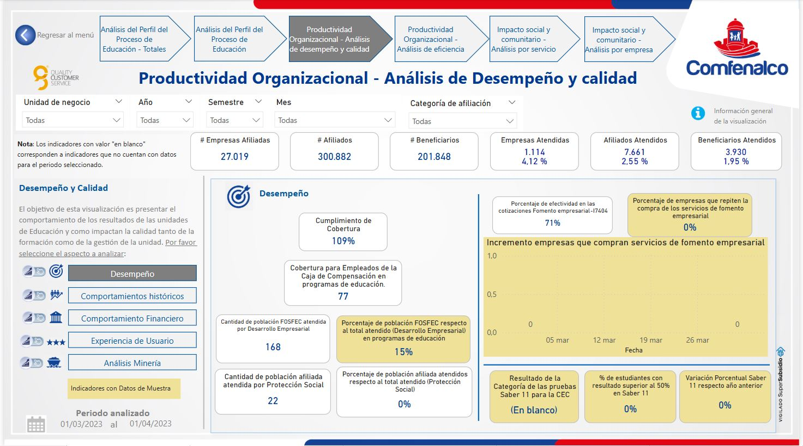
Objetivo de la Visualización¶
Ofrecer una visión integral del desempeño y la calidad de las unidades de Educación, destacando indicadores clave sobre cobertura, efectividad, fidelización empresarial y logros académicos. La vista sirve para evaluar cómo los resultados de los programas impactan tanto en la formación como en la gestión organizacional, facilitando la toma de decisiones orientadas a la mejora continua.
Estructura y Elementos Principales¶
| Sección | Descripción |
|---|---|
| Panel Lateral Izquierdo | Sección Desempeño y Calidad con botones para Desempeño (seleccionado), Comportamientos Históricos, Comportamiento Financiero, Experiencia de Usuario y Análisis Minería. Incluye una breve descripción del propósito de la vista y una alerta cuando los datos corresponden a una muestra. |
| Tarjetas KPI Superiores | Tarjetas que muestran métricas institucionales generales (empresas afiliadas, afiliados, beneficiarios, empresas atendidas, afiliados atendidos, beneficiarios atendidos) aportando contexto global antes de analizar la calidad y resultados específicos. |
| Bloque “Desempeño” | Contiene indicadores clave como cumplimiento de cobertura, efectividad de cotizaciones, repetición de compra de empresas, cobertura para empleados internos, proporciones de población atendida en programas específicos y variación en resultados académicos. |
| Gráfico de Incremento Empresarial | Área de gráfico de líneas destinada a visualizar la tendencia de incremento de empresas que contratan servicios de fomento empresarial, permitiendo identificar patrones temporales en la demanda. |
| Leyendas e Íconos | Elementos visuales que diferencian los indicadores (por ejemplo, icono de diana para desempeño), mejoran la legibilidad y destacan la categorización de la información. |
| Icono de Información | Botón contextual que despliega definiciones, notas metodológicas y criterios de cálculo para la interpretación correcta de los indicadores. |
| Pie de Página | Franja inferior con la referencia temporal analizada y líneas de color corporativo que mantienen la coherencia gráfica con el resto del tablero. |
Beneficios para la Gestión¶
- Evaluación Integral del Desempeño: Reúne en un solo espacio los principales indicadores de cobertura y calidad, proporcionando una base sólida para medir el logro de objetivos estratégicos.
- Detección de Áreas de Mejora: El análisis de efectividad y repetición de compra corporativa ayuda a identificar oportunidades para fortalecer la propuesta de valor y la retención de clientes empresariales.
- Seguimiento de Logros Académicos: Los indicadores académicos permiten monitorear el impacto de los programas de educación en los resultados de aprendizaje, orientando acciones pedagógicas y de apoyo.
- Tendencias en Demanda Empresarial: El gráfico de incremento de empresas facilita la identificación de patrones en la compra de servicios, ayudando a planificar estrategias comerciales y de fidelización.
- Interactividad para Análisis Profundo: Los filtros y la segmentación por aspecto ofrecen flexibilidad para explorar tendencias específicas, generar reportes comparativos y sustentar decisiones basadas en datos.
Productividad Organizacional – Análisis de Desempeño y Calidad (Comportamientos Históricos)¶
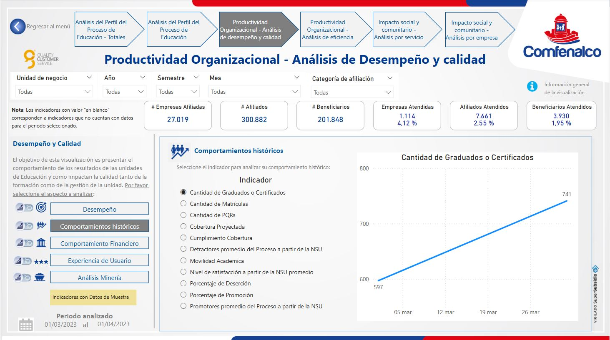
Objetivo de la Visualización¶
Permitir el análisis evolutivo de los indicadores clave del proceso educativo, brindando una herramienta interactiva para identificar tendencias, patrones y variaciones a lo largo del tiempo. La vista ayuda a comprender cómo se comportan aspectos como graduaciones, matrículas, PQR y otros indicadores de calidad, facilitando la toma de decisiones basadas en la historia de desempeño.
Estructura y Elementos Principales¶
| Sección | Descripción |
|---|---|
| Panel Lateral Izquierdo | Sección Desempeño y Calidad con botones para diferentes enfoques (Desempeño, Comportamientos Históricos, Comportamiento Financiero, Experiencia de Usuario, Análisis Minería). El botón Comportamientos Históricos aparece resaltado. Incluye una explicación breve del objetivo de la vista y una alerta cuando los datos son de muestra. |
| Tarjetas KPI Superiores | Tarjetas que presentan métricas institucionales globales (empresas afiliadas, afiliados, beneficiarios, empresas atendidas, etc.), proporcionando contexto antes de explorar el comportamiento histórico. |
| Bloque “Comportamientos históricos” | Contiene una lista de radio‑botones con los indicadores disponibles para análisis (graduados, matrículas, PQR, cobertura proyectada, porcentaje de deserción, entre otros). La selección de un indicador actualiza el gráfico a la derecha. |
| Gráfico de Tendencia | Gráfico de líneas que muestra la evolución temporal del indicador elegido, permitiendo visualizar tendencias y variaciones de forma clara e inmediata. |
| Icono de Información | Botón contextual que despliega definiciones y consideraciones metodológicas para interpretar adecuadamente los indicadores históricos. |
| Pie de Página | Franja inferior con la referencia del periodo analizado y líneas de color corporativo que mantienen la coherencia gráfica con el resto de tableros. |
Beneficios para la Gestión¶
- Detección de Tendencias: Ayuda a identificar incrementos, descensos o patrones estacionales en los indicadores, facilitando la planificación estratégica.
- Evaluación de Impacto: Permite correlacionar iniciativas implementadas con cambios en los resultados, apoyando la medición de efectividad de proyectos y políticas.
- Priorización de Acciones Correctivas: Al resaltar variaciones significativas, guía la asignación de recursos hacia las áreas que requieren atención inmediata.
- Análisis Flexible: Los filtros y la selección de indicadores ofrecen múltiples combinaciones para profundizar en periodos o variables específicas.
- Transparencia y Seguimiento Continuo: Proporciona una visión histórica consolidada que respalda la rendición de cuentas y el monitoreo permanente de la calidad educativa.
Productividad Organizacional – Análisis de Desempeño y Calidad (Comportamiento Financiero)¶
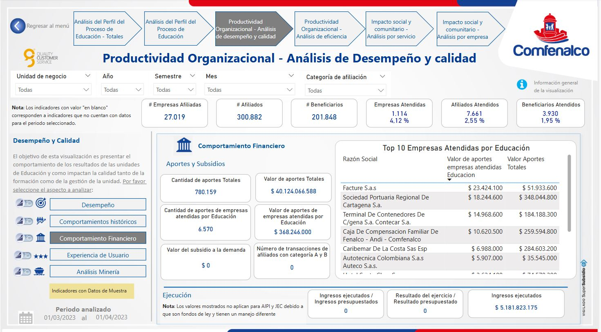
Objetivo de la Visualización¶
Mostrar de manera estructurada el comportamiento financiero del proceso educativo, resaltando aportes, subsidios y transacciones, además de identificar a las principales empresas que invierten en educación. Esta vista facilita el seguimiento de la ejecución presupuestal y la toma de decisiones sobre asignación de recursos y estrategias de vinculación empresarial.
Estructura y Elementos Principales¶
| Sección | Descripción |
|---|---|
| Panel Lateral Izquierdo | Menú Desempeño y Calidad con botones para cambiar de enfoque (Desempeño, Comportamientos Históricos, Comportamiento Financiero, Experiencia de Usuario, Análisis Minería). Incluye un texto que explica el propósito de la vista y alerta sobre el uso de datos de muestra. |
| Tarjetas KPI Superiores | Tarjetas que ofrecen contexto institucional antes de profundizar en la sección financiera (empresas afiliadas, afiliados, beneficiarios, entre otras). |
| Bloque “Comportamiento Financiero” | Conjunto de paneles que agrupan indicadores de aportes y subsidios (cantidad, valor y transacciones de afiliados), integrando notas metodológicas para su correcta interpretación. |
| Tabla “Top 10 Empresas Atendidas por Educación” | Tabla dinámica que lista las empresas con mayor aporte al proceso educativo, destacando el valor invertido y su relevancia dentro del total. |
| Sección de Ejecución Presupuestal | Panel inferior que contrasta los ingresos ejecutados con los ingresos presupuestados y el resultado del ejercicio, permitiendo visualizar la eficiencia del gasto. |
| Icono de Información | Botón contextual que despliega definiciones clave y criterios de cálculo para comprender los indicadores financieros. |
| Pie de Página | Franja inferior con la referencia temporal del análisis y líneas de color corporativo que mantienen la coherencia gráfica con todo el tablero. |
Beneficios para la Gestión¶
- Control Financiero Integral: Centraliza los indicadores clave de aportes y ejecución, facilitando la supervisión del uso de recursos y la planeación presupuestal.
- Identificación de Socios Estratégicos: La tabla de empresas permite reconocer a los principales aliados y enfocar acciones de fidelización o expansión de convenios.
- Evaluación de Eficiencia Presupuestal: El contraste entre ingresos ejecutados y presupuestados ayuda a detectar desviaciones y ajustar estrategias de inversión.
- Transparencia y Rendición de Cuentas: Presenta información financiera consolidada que respalda decisiones informadas y reportes a la alta dirección.
- Interactividad para Análisis Detallado: Los filtros ofrecen flexibilidad para segmentar la información por unidad, periodo o categoría, aportando profundidad al análisis y soporte a iniciativas de mejora.
Productividad Organizacional – Análisis de Desempeño y Calidad (Experiencia de Usuario)¶
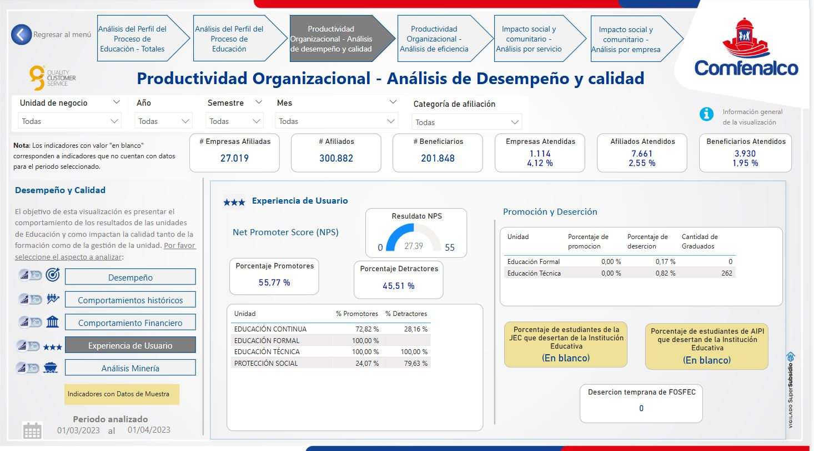
Objetivo de la Visualización¶
Ofrecer una perspectiva integral de la satisfacción y fidelidad de los usuarios, complementada con métricas de promoción y deserción académica. La vista facilita la identificación de unidades con mayor proporción de promotores, el seguimiento del índice NPS y la detección temprana de riesgos de abandono institucional.
Estructura y Elementos Principales¶
| Sección | Descripción |
|---|---|
| Panel Lateral Izquierdo | Menú Desempeño y Calidad con botones para cambiar de enfoque (Desempeño, Comportamientos Históricos, Comportamiento Financiero, Experiencia de Usuario, Análisis Minería). Incluye una breve explicación de la vista actual y un aviso sobre el uso de datos de muestra. |
| Tarjetas KPI Superiores | Tarjetas que aportan contexto institucional (empresas afiliadas, afiliados, beneficiarios, entre otros) antes de profundizar en la experiencia de usuario. |
| Bloque “Experiencia de Usuario” | Sección central con el indicador Net Promoter Score (gauge semicircular) y tarjetas que muestran la proporción de promotores y detractores. |
| Tabla de Promotores/Detractores por Unidad | Tabla que desglosa, para cada unidad, el porcentaje relativo de promotores y detractores, facilitando la comparación de la percepción del servicio entre áreas. |
| Panel “Promoción y Deserción” | Tabla que presenta los porcentajes de promoción y deserción, así como la cantidad de graduados por unidad, brindando una visión combinada de satisfacción y permanencia. |
| Indicadores de Alerta Temprana | Tarjetas resaltadas que muestran los valores de deserción temprana según programas específicos, permitiendo detectar riesgos y enfocar acciones preventivas. |
| Icono de Información | Botón contextual que despliega definiciones y criterios metodológicos para interpretar correctamente los indicadores de satisfacción y deserción. |
| Pie de Página | Franja inferior con la referencia temporal del análisis y líneas de color corporativo que mantienen la coherencia gráfica con el resto de tableros. |
Beneficios para la Gestión¶
- Medición Continua de la Satisfacción: Integra el índice NPS y su desglose por unidad, permitiendo un seguimiento frecuente de la lealtad de los usuarios.
- Detección de Áreas Críticas: La tabla de promotores y detractores señala las unidades con menor satisfacción, orientando iniciativas de mejora focalizadas.
- Visión Integrada de Permanencia: Combinar promoción, deserción y graduados facilita evaluar el impacto de la experiencia de usuario en la trayectoria académica.
- Alertas Tempranas de Abandono: Los indicadores destacados permiten anticiparse a posibles incrementos de deserción y diseñar acciones correctivas oportunas.
- Interactividad y Profundidad Analítica: Los filtros ofrecen flexibilidad para segmentar por periodo o categoría, respaldando decisiones basadas en datos y reportes comparativos.
Productividad Organizacional – Análisis de Desempeño y Calidad (Análisis Minería)¶
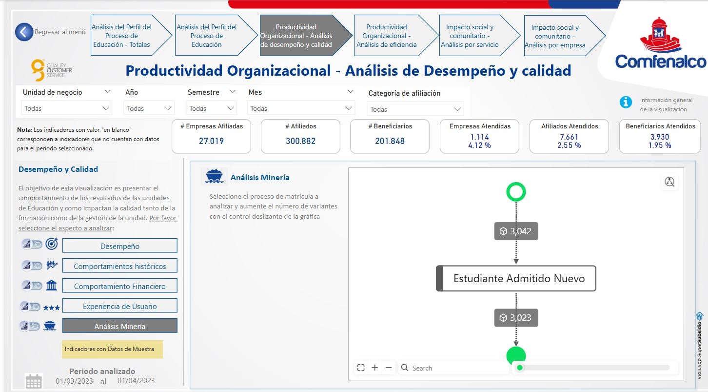
Objetivo de la Visualización¶
Proporcionar una representación interactiva de los flujos reales del proceso de matrícula mediante técnicas de Process Mining, permitiendo descubrir rutas frecuentes, cuellos de botella y oportunidades de optimización en la gestión educativa.
Estructura y Elementos Principales¶
| Sección | Descripción |
|---|---|
| Panel Lateral Izquierdo | Menú Desempeño y Calidad con botones para Desempeño, Comportamientos Históricos, Comportamiento Financiero, Experiencia de Usuario y Análisis Minería (seleccionado). Incluye una descripción breve del propósito de la vista y un aviso sobre el uso de datos de muestra. |
| Tarjetas KPI Superiores | Tarjetas que ofrecen contexto institucional (empresas afiliadas, afiliados, beneficiarios, empresas atendidas, afiliados atendidos, beneficiarios atendidos) antes de profundizar en la minería de procesos. |
| Bloque “Análisis Minería” | Contiene instrucciones para seleccionar el proceso a analizar y ajustar el número de variantes mostradas, junto con el área principal donde se visualiza el diagrama de flujo real de eventos. |
| Diagrama de Proceso | Visualización interactiva que representa los pasos del proceso de matrícula, destacando los nodos y las transiciones según su frecuencia. Incluye controles de zoom y un deslizador para explorar variantes. |
| Icono de Información | Botón contextual que despliega definiciones de eventos, criterios de agrupación y recomendaciones para interpretar la gráfica. |
| Pie de Página | Franja inferior con la referencia temporal del análisis y líneas de color corporativo que mantienen la coherencia gráfica con las demás vistas. |
Beneficios para la Gestión¶
- Descubrimiento de Flujos Reales: Permite contrastar el proceso teórico con el flujo real, evidenciando desviaciones y pasos innecesarios.
- Detección de Cuellos de Botella: La visualización de transiciones frecuentes ayuda a identificar puntos de demora o retrabajo, orientando acciones de mejora.
- Optimización de Procesos: Al conocer las rutas más comunes y su duración relativa, se pueden rediseñar etapas para reducir tiempos y elevar la eficiencia.
- Análisis Interactivo: Los controles de variantes y zoom facilitan el enfoque en casos específicos o en la totalidad del proceso, brindando flexibilidad analítica.
- Soporte a la Mejora Continua: La información derivada de la minería de procesos respalda decisiones basadas en datos para incrementar la calidad y la eficacia operativa.
Productividad Organizacional – Análisis de Eficiencia¶
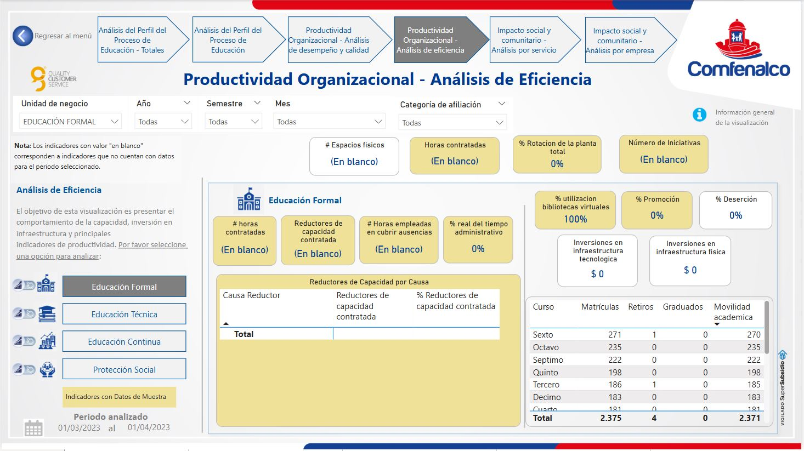
Objetivo de la Visualización¶
Exponer, de manera clara y estructurada, el comportamiento de la capacidad operativa, la inversión en infraestructura y los principales indicadores de productividad de las unidades educativas. La vista permite identificar el uso de recursos, los factores que reducen la capacidad contratada y la efectividad de iniciativas académicas y administrativas.
Estructura y Elementos Principales¶
| Sección | Descripción |
|---|---|
| Panel Lateral Izquierdo | Menú Análisis de Eficiencia con botones para Educación Formal, Educación Técnica, Educación Continua y Protección Social; incluye una breve explicación del propósito de la vista y una alerta cuando se utilizan datos de muestra. |
| Tarjetas KPI Superiores | Conjunto de tarjetas que presentan indicadores clave de capacidad (espacios físicos, horas contratadas, rotación de planta, iniciativas, etc.), sin mostrar cifras en la descripción. |
| Bloque “Educación Formal” | Grupo de tarjetas detalladas que indican horas contratadas, horas empleadas en cubrir ausencias y porcentaje de tiempo administrativo real; se utiliza para profundizar en la unidad seleccionada. |
| Tabla “Reductores de Capacidad por Causa” | Tabla que desglosa las causas que disminuyen la capacidad contratada, permitiendo analizar su peso relativo y planificar acciones correctivas. |
| Panel de Indicadores Complementarios | Tarjetas que muestran la utilización de bibliotecas virtuales, porcentajes de promoción y deserción, así como resúmenes de inversión tecnológica y física. |
| Tabla de Cursos | Tabla a la derecha con información de matrículas, retiros, graduados y movilidad académica por curso, facilitando la evaluación granular de la eficiencia educativa. |
| Icono de Información | Botón contextual que despliega definiciones y criterios de cálculo para interpretar adecuadamente los indicadores de eficiencia. |
| Pie de Página | Franja inferior con la referencia temporal del análisis y líneas de color corporativo que mantienen la coherencia gráfica con el resto de tableros. |
Beneficios para la Gestión¶
- Visibilidad de la Capacidad Operativa: Permite conocer el uso de espacios, tiempo laboral y recursos, identificando rápidamente la subutilización o la sobrecarga.
- Detección de Factores Limitantes: La tabla de reductores de capacidad facilita la priorización de acciones para minimizar ausencias, tiempos muertos y otros impedimentos.
- Evaluación de Inversiones: Presenta el impacto de la inversión en infraestructura física y tecnológica sobre la eficiencia y el aprovechamiento de los servicios educativos.
- Seguimiento de Rendimiento Académico: Combinar datos de curso y movilidad académica con indicadores de promoción y deserción aporta una visión completa del ciclo formativo.
- Interactividad para Análisis Profundo: Los filtros y la selección de unidades ofrecen flexibilidad para segmentar la información por periodo o área, respaldando decisiones basadas en datos.
Productividad Organizacional – Análisis de Eficiencia (Educación Técnica)¶
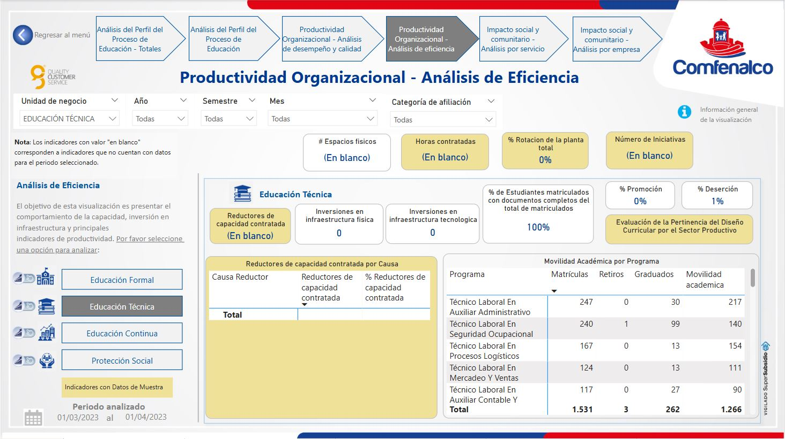
Objetivo de la Visualización¶
Presentar el desempeño de la unidad de Educación Técnica en términos de capacidad operativa, utilización de recursos e impacto de la inversión en infraestructura. La vista permite identificar factores que reducen la capacidad contratada, evaluar la pertinencia de la oferta formativa y analizar la movilidad académica por programa.
Estructura y Elementos Principales¶
| Sección | Descripción |
|---|---|
| Panel Lateral Izquierdo | Menú Análisis de Eficiencia con opciones para Educación Formal, Educación Técnica (seleccionado), Educación Continua y Protección Social. Incluye una breve descripción del propósito de la vista y un aviso sobre datos de muestra. |
| Tarjetas KPI Superiores | Tarjetas que resumen la capacidad general (espacios físicos, horas contratadas, rotación de planta, iniciativas, etc.), proporcionando contexto global sin cifras en el texto. |
| Bloque “Educación Técnica” | Grupo de tarjetas que detallan reductores de capacidad contratada e inversiones en infraestructura física y tecnológica, así como métricas de tiempo administrativo y documentación estudiantil. |
| Tabla “Reductores de Capacidad por Causa” | Tabla que desglosa las causas que disminuyen la capacidad contratada, permitiendo priorizar acciones correctivas. |
| Panel de Indicadores Complementarios | Tarjetas que muestran indicadores de utilización de bibliotecas virtuales, promoción, deserción y evaluación curricular por el sector productivo. |
| Tabla “Movilidad Académica por Programa” | Tabla con datos de matrículas, retiros, graduados y movilidad académica para cada programa técnico, facilitando el análisis granular de la eficiencia formativa. |
| Icono de Información | Botón contextual que despliega definiciones y criterios de cálculo para interpretar los indicadores de eficiencia. |
| Pie de Página | Franja inferior con la referencia temporal del análisis y líneas de color corporativo que mantienen la coherencia gráfica con el resto de tableros. |
Beneficios para la Gestión¶
- Visibilidad de Capacidad y Recursos: Permite monitorear utilización de espacios, tiempo laboral e inversiones, identificando rápidamente subutilización o sobrecarga.
- Priorización de Acciones Correctivas: La tabla de reductores de capacidad ayuda a focalizar esfuerzos para minimizar ausencias y otros impedimentos operativos.
- Evaluación de Oferta Formativa: El panel de movilidad académica y la evaluación curricular facilitan la alineación de programas con la demanda del sector productivo.
- Seguimiento de Indicadores Clave: Combina métricas de promoción, deserción y documentación académica para medir la eficiencia educativa de manera integral.
- Interactividad Analítica: Los filtros permiten segmentar la información por periodo o categoría, apoyando decisiones basadas en datos y reportes comparativos.
Productividad Organizacional – Análisis de Eficiencia (Educación Continua)¶
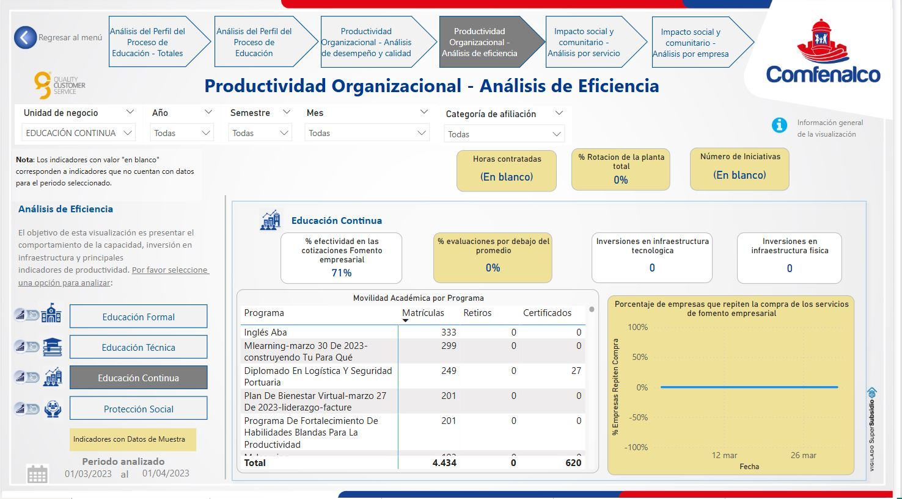
Objetivo de la Visualización¶
Ofrecer una perspectiva consolidada sobre la eficiencia operativa de la unidad de Educación Continua, destacando el uso de recursos, la efectividad de las evaluaciones, la inversión en infraestructura y la movilidad académica por programa. La vista facilita la detección de oportunidades de optimización y el seguimiento de la recurrencia empresarial en la compra de servicios.
Estructura y Elementos Principales¶
| Sección | Descripción |
|---|---|
| Panel Lateral Izquierdo | Menú Análisis de Eficiencia con opciones para Educación Formal, Educación Técnica, Educación Continua (seleccionado) y Protección Social. Incluye una breve explicación del propósito de la vista y un aviso sobre el uso de datos de muestra. |
| Tarjetas KPI Superiores | Tarjetas que presentan indicadores generales de capacidad (horas contratadas, rotación de planta, número de iniciativas) sin mostrar cifras en la descripción. |
| Bloque “Educación Continua” | Conjunto de tarjetas que muestran indicadores específicos, como la efectividad en cotizaciones, porcentaje de evaluaciones bajo el promedio y montos de inversión en infraestructura tecnológica y física. |
| Tabla “Movilidad Académica por Programa” | Tabla que desglosa matrículas, retiros y certificados para cada programa de Educación Continua, brindando una visión granular de la eficiencia formativa. |
| Gráfico de Recurrencia Empresarial | Gráfico de líneas que representa la proporción de empresas que repiten la compra de servicios de fomento empresarial, indicando la fidelización corporativa en el tiempo. |
| Icono de Información | Botón contextual que despliega definiciones y criterios de cálculo para interpretar correctamente los indicadores de eficiencia. |
| Pie de Página | Franja inferior con la referencia temporal del análisis y líneas de color corporativo que garantizan la coherencia gráfica con el resto de tableros. |
Beneficios para la Gestión¶
- Seguimiento del Rendimiento Académico: La tabla de movilidad académica permite evaluar la efectividad de cada programa y detectar áreas de mejora en la oferta formativa.
- Medición de Eficiencia Operativa: Los indicadores de capacidad y ejecución de recursos ofrecen una visión clara del uso de horas contratadas, infraestructura y tiempo administrativo.
- Fidelización Empresarial: El gráfico de recurrencia empresarial ayuda a identificar la satisfacción de los clientes corporativos y orienta estrategias para fortalecer la relación con el sector productivo.
- Priorización de Inversiones: Los datos sobre inversión tecnológica y física facilitan la toma de decisiones respecto a mejoras de infraestructura y optimización de recursos.
- Interactividad Analítica: Los filtros permiten segmentar la información por periodo y categoría, aportando flexibilidad para diagnósticos específicos y reportes comparativos.
Productividad Organizacional – Análisis de Eficiencia (Protección Social)¶
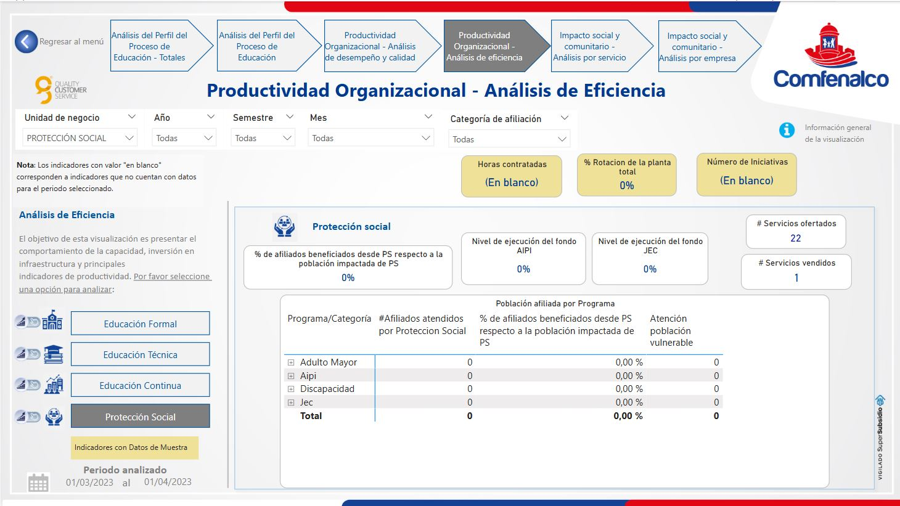
Objetivo de la Visualización¶
Proporcionar una visión consolidada de la eficiencia operativa de la unidad de Protección Social, resaltando la utilización de recursos, la ejecución de fondos y la cobertura de servicios destinados a poblaciones vulnerables. La vista facilita la detección de oportunidades de mejora y la priorización de iniciativas que maximicen el impacto social.
Estructura y Elementos Principales¶
| Sección | Descripción |
|---|---|
| Panel Lateral Izquierdo | Menú Análisis de Eficiencia con botones para Educación Formal, Educación Técnica, Educación Continua y Protección Social (seleccionado). Incluye una breve explicación del propósito de la vista y un aviso sobre datos de muestra. |
| Tarjetas KPI Superiores | Tarjetas que resumen indicadores generales de capacidad (horas contratadas, rotación de planta, número de iniciativas), sin mostrar cifras en el texto. |
| Bloque “Protección Social” | Tarjetas que muestran la proporción de afiliados beneficiados, la ejecución de fondos institucionales y métricas de servicios ofertados y vendidos. |
| Tabla “Población Afiliada por Programa” | Tabla que desglosa categorías de población atendida (adulto mayor, discapacidad, entre otras), indicando cobertura y atención a población vulnerable. |
| Icono de Información | Botón contextual que despliega definiciones y criterios de cálculo para interpretar correctamente los indicadores de eficiencia. |
| Pie de Página | Franja inferior con la referencia temporal del análisis y líneas de color corporativo que mantienen la coherencia visual con el resto de tableros. |
Beneficios para la Gestión¶
- Seguimiento de la Cobertura Social: Permite monitorear la proporción de afiliados beneficiados y la atención a población vulnerable, identificando brechas y áreas de oportunidad.
- Evaluación de la Ejecución de Fondos: Los indicadores de ejecución presupuestal ayudan a verificar el uso eficiente de recursos destinados a programas sociales.
- Optimización de la Oferta de Servicios: La combinación de servicios ofertados y vendidos facilita la identificación de la demanda real y la planificación de iniciativas futuras.
- Priorización Basada en Datos: La tabla de población atendida orienta la asignación de esfuerzos hacia los programas de mayor impacto y necesidad social.
- Interactividad Analítica: Los filtros permiten segmentar la información por periodo y categoría, proporcionando flexibilidad para diagnósticos específicos y decisiones informadas.
Impacto Social y Comunitario – Análisis por Servicio (Educación Formal)¶
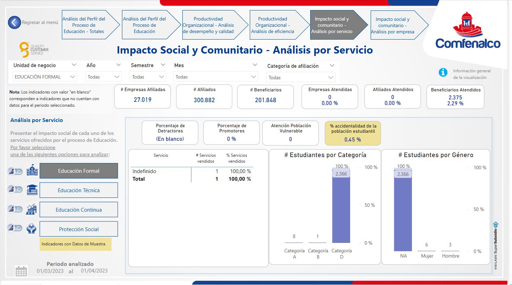
Objetivo de la Visualización¶
Exponer de forma clara el impacto social generado por los servicios de Educación Formal, resaltando la distribución de estudiantes por categoría y género, la atención a población vulnerable y la calidad percibida por los usuarios. La vista permite evaluar rápidamente la cobertura social y detectar oportunidades para fortalecer la inclusión y la satisfacción estudiantil.
Estructura y Elementos Principales¶
| Sección | Descripción |
|---|---|
| Panel Lateral Izquierdo | Menú Análisis por Servicio con botones para Educación Formal (seleccionado), Educación Técnica, Educación Continua y Protección Social. Incluye una breve explicación del propósito de la vista y un aviso sobre datos de muestra. |
| Tarjetas KPI Superiores | Tarjetas que muestran indicadores globales (empresas afiliadas, afiliados, beneficiarios, empresas atendidas, afiliados atendidos y beneficiarios atendidos) para contextualizar el análisis de servicio. |
| Bloque de Indicadores Sociales | Tarjetas que presentan el porcentaje de promotores y detractores, la atención a población vulnerable y el indicador de accidentalidad estudiantil, ofreciendo una visión rápida de la calidad percibida y la seguridad. |
| Tabla de Servicios Vendidos | Tabla que muestra el detalle de servicios ofertados y vendidos dentro de Educación Formal, evidenciando la conversión de la oferta en impacto real. |
| Gráfico “Estudiantes por Categoría” | Gráfico de barras que visualiza la proporción de estudiantes atendidos según categoría de afiliación, facilitando la evaluación de la cobertura social. |
| Gráfico “Estudiantes por Género” | Gráfico de barras que ilustra la distribución de estudiantes por género, permitiendo analizar la equidad de acceso a los servicios. |
| Icono de Información | Botón contextual que despliega definiciones y criterios de cálculo para interpretar correctamente los indicadores sociales. |
| Pie de Página | Franja inferior con la referencia temporal del análisis y líneas de color corporativo que garantizan la coherencia visual con el resto del tablero. |
Beneficios para la Gestión¶
- Evaluación de Cobertura Social: Permite identificar la distribución de estudiantes por categoría y género, orientando estrategias de inclusión y equidad.
- Medición de la Satisfacción: Los indicadores de promotores y detractores facilitan el seguimiento de la percepción de calidad y respaldan acciones de mejora continua.
- Seguimiento de Seguridad Estudiantil: El indicador de accidentalidad aporta información clave para implementar medidas preventivas y de bienestar.
- Análisis de Conversión de Servicios: La tabla de servicios vendidos evidencia la efectividad en la entrega de programas, apoyando decisiones sobre oferta y demanda.
- Interactividad Analítica: Los filtros dinámicos permiten segmentar la información por periodo o categoría, proporcionando flexibilidad para diagnósticos específicos y reportes comparativos.
Impacto Social y Comunitario – Análisis por Servicio (Educación Técnica)¶
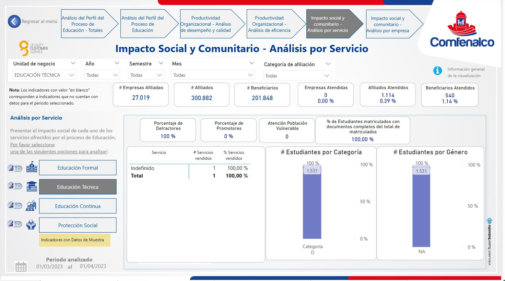
Objetivo de la Visualización¶
Mostrar de forma consolidada el impacto social de los servicios de Educación Técnica, resaltando la distribución de estudiantes por categoría y género, la calidad percibida por los usuarios y la atención a población vulnerable. La vista facilita la evaluación de la cobertura social y la identificación de áreas de mejora en la satisfacción estudiantil.
Estructura y Elementos Principales¶
| Sección | Descripción |
|---|---|
| Panel Lateral Izquierdo | Menú Análisis por Servicio con botones para Educación Formal, Educación Técnica (seleccionado), Educación Continua y Protección Social. Incluye una breve explicación del objetivo de la vista y un aviso sobre el uso de datos de muestra. |
| Tarjetas KPI Superiores | Tarjetas que proporcionan contexto institucional sobre afiliados, beneficiarios y otros indicadores globales antes de profundizar en el servicio. |
| Bloque de Indicadores Sociales | Tarjetas que presentan la proporción de promotores y detractores, la atención a población vulnerable y la integridad documental de los estudiantes matriculados. |
| Tabla de Servicios Vendidos | Tabla que muestra el detalle de servicios ofertados y vendidos dentro de Educación Técnica, evidenciando la conversión de la oferta en impacto real. |
| Gráfico “Estudiantes por Categoría” | Gráfico de barras que ilustra la distribución de estudiantes atendidos según categoría de afiliación, facilitando el análisis de cobertura social. |
| Gráfico “Estudiantes por Género” | Gráfico de barras que representa la distribución de estudiantes por género, permitiendo evaluar la equidad de acceso a los servicios. |
| Icono de Información | Botón contextual que despliega definiciones y criterios de cálculo para interpretar correctamente los indicadores sociales. |
| Pie de Página | Franja inferior con la referencia temporal del análisis y líneas de color corporativo que mantienen la coherencia gráfica con el resto del tablero. |
Beneficios para la Gestión¶
- Evaluación de Cobertura Social: Permite conocer la distribución de estudiantes por categoría y género, orientando estrategias de inclusión y equidad.
- Monitoreo de Satisfacción: Los indicadores de promotores y detractores facilitan el seguimiento de la percepción de calidad y respaldan acciones de mejora continua.
- Seguimiento de Documentación Estudiantil: La tarjeta de integridad documental ayuda a garantizar la conformidad de los procesos administrativos de matrícula.
- Análisis de Conversión de Servicios: La tabla de servicios vendidos evidencia la efectividad en la entrega de programas, apoyando decisiones sobre oferta y demanda.
- Interactividad Analítica: Los filtros dinámicos permiten segmentar la información por periodo o categoría, proporcionando flexibilidad para diagnósticos detallados y reportes comparativos.
Impacto Social y Comunitario – Análisis por Servicio (Educación Continua)¶
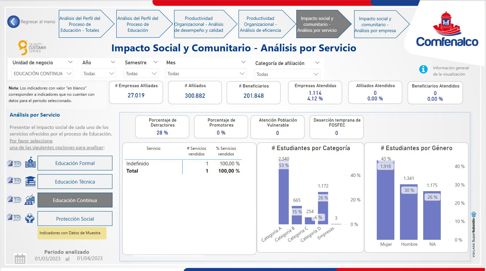
Objetivo de la Visualización¶
Presentar, de forma estructurada e interactiva, el impacto social generado por los servicios de Educación Continua, resaltando distribución de estudiantes por categoría y género, niveles de satisfacción de los usuarios y atención a población vulnerable. La vista facilita identificar oportunidades para fortalecer la inclusión, la calidad percibida y la fidelización de los participantes.
Estructura y Elementos Principales¶
| Sección | Descripción |
|---|---|
| Panel Lateral Izquierdo | Menú Análisis por Servicio con botones para las cuatro áreas (Educación Formal, Educación Técnica, Educación Continua – seleccionado – y Protección Social), junto a un texto que explica el propósito de la vista y un aviso cuando se usan datos de muestra. |
| Tarjetas KPI Superiores | Tarjetas que brindan contexto institucional (empresas afiliadas, afiliados, beneficiarios, empresas atendidas, afiliados atendidos, beneficiarios atendidos) antes de profundizar en el análisis del servicio. |
| Bloque de Indicadores Sociales | Tarjetas que muestran los porcentajes de detractores y promotores, la atención a población vulnerable y los indicadores de retención, ofreciendo una lectura rápida de la calidad percibida. |
| Tabla de Servicios Vendidos | Tabla que detalla los servicios ofertados y vendidos dentro de Educación Continua, evidenciando la conversión de la oferta en impacto real. |
| Gráfico “Estudiantes por Categoría” | Gráfico de barras que visualiza la distribución de estudiantes atendidos según la categoría de afiliación, facilitando la evaluación de la cobertura social. |
| Gráfico “Estudiantes por Género” | Gráfico de barras que representa la distribución de estudiantes por género, permitiendo analizar la equidad de acceso a los servicios. |
| Icono de Información | Botón contextual que despliega definiciones y criterios de cálculo, ayudando al usuario a interpretar correctamente los indicadores sociales. |
| Pie de Página | Franja inferior con la referencia temporal del análisis y líneas de color corporativo que aseguran la coherencia gráfica con el resto del tablero. |
Beneficios para la Gestión¶
- Evaluación de Cobertura Social: Permite conocer la distribución de estudiantes por categoría y género, orientando acciones de inclusión y equidad.
- Monitoreo de Satisfacción: Los indicadores de promotores y detractores facilitan el seguimiento de la percepción de calidad y respaldan decisiones de mejora continua.
- Priorización de Servicios: La tabla de servicios vendidos aporta información sobre la efectividad de la oferta, ayudando a ajustar programas según la demanda real.
- Seguimiento de Retención y Vulnerabilidad: La visualización de atención a población vulnerable y de retención temprana apoya la identificación de grupos que requieren intervenciones específicas.
- Interactividad Analítica: Los filtros dinámicos posibilitan segmentar datos por periodo o categoría, ofreciendo flexibilidad para diagnósticos detallados y reportes comparativos.
Impacto Social y Comunitario – Análisis por Servicio (Protección Social)¶
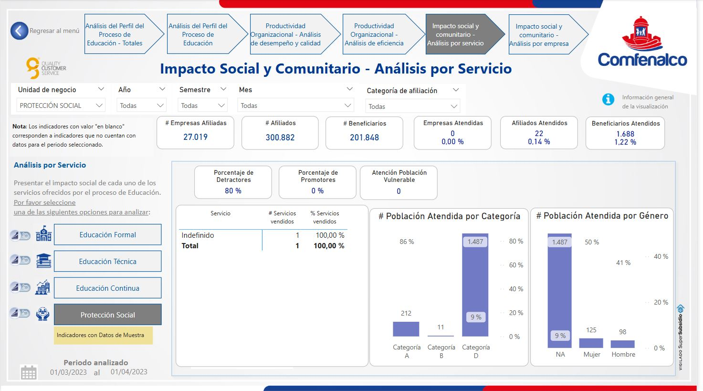
Objetivo de la Visualización¶
Presentar el impacto social derivado de los servicios de Protección Social, destacando la distribución de la población atendida por categoría y género, la satisfacción de los beneficiarios y el grado de atención a grupos vulnerables. La vista facilita evaluar la cobertura y calidad de los programas, así como identificar oportunidades para fortalecer la inclusión y la experiencia de los usuarios.
Estructura y Elementos Principales¶
| Sección | Descripción |
|---|---|
| Panel Lateral Izquierdo | Menú Análisis por Servicio con botones para Educación Formal, Educación Técnica, Educación Continua y Protección Social (activo). Contiene un breve texto explicativo sobre la finalidad de la vista y un aviso cuando se utilizan datos de muestra. |
| Tarjetas KPI Superiores | Tarjetas que ofrecen contexto institucional mostrando, de forma resumida, información sobre empresas afiliadas, afiliados, beneficiarios y otros indicadores globales que respaldan la lectura de impacto social. |
| Bloque de Indicadores Sociales | Tarjetas que muestran la proporción de promotores y detractores, la atención a población vulnerable, la retención temprana y otros indicadores claves para medir la percepción de calidad y la cobertura social. |
| Tabla de Servicios Vendidos | Tabla que detalla los servicios ofertados y vendidos dentro de Protección Social, reflejando la correspondencia entre oferta y utilización real. |
| Gráfico “Población Atendida por Categoría” | Gráfico de barras que visualiza la distribución de población atendida según categoría de afiliación, facilitando la evaluación de alcance y equidad. |
| Gráfico “Población Atendida por Género” | Gráfico de barras que representa la distribución de población atendida por género, permitiendo analizar la inclusión y el acceso igualitario a los servicios. |
| Icono de Información | Botón contextual que despliega definiciones y criterios de cálculo empleados en los indicadores sociales, ayudando al usuario a interpretar correctamente la vista. |
| Pie de Página | Franja inferior que muestra el periodo de análisis y líneas de color corporativo, preservando la coherencia gráfica con el resto de los tableros del modelo analítico. |
Beneficios para la Gestión¶
- Evaluación de Cobertura Social: Permite identificar la distribución de beneficiarios por categoría y género, orientando decisiones para mejorar la equidad en la prestación de servicios.
- Monitoreo de Satisfacción: Los indicadores de promotores y detractores facilitan el seguimiento de la calidad percibida y respaldan la implementación de acciones de mejora continua.
- Análisis de Demanda y Conversión: La tabla de servicios vendidos muestra la efectividad de la oferta de programas, guiando la planificación de iniciativas futuras.
- Seguimiento de Atención a Grupos Vulnerables: El bloque de indicadores sociales ofrece una visión clara del nivel de atención a población vulnerable, apoyando la priorización de recursos y esfuerzos.
- Interactividad Analítica: Los filtros dan flexibilidad para segmentar la información, permitir diagnósticos específicos y generar reportes comparativos que sustenten la toma de decisiones basada en datos.
Impacto Social y Comunitario – Análisis por Empresa¶
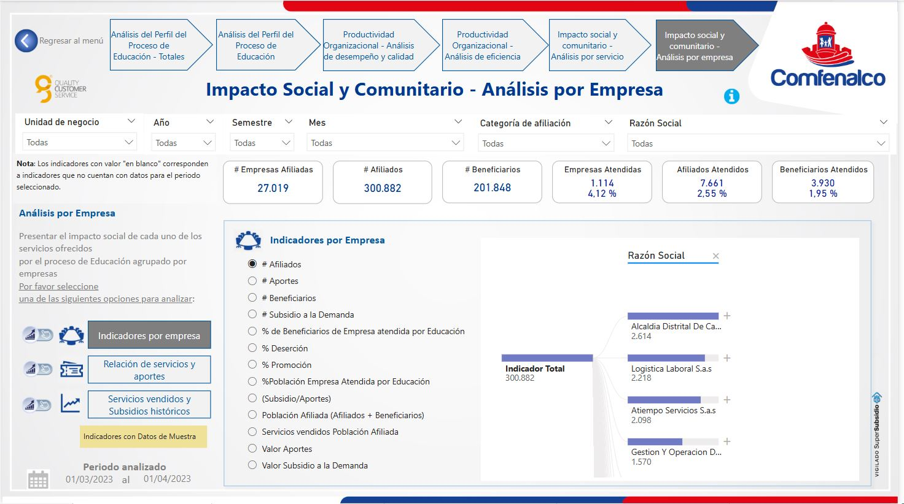
Objetivo de la Visualización¶
Ofrecer una perspectiva interactiva del impacto social generado por los servicios de Educación agrupado por empresa, permitiendo comparar indicadores clave (afiliados, aportes, beneficiarios, subsidios, etc.) y detectar oportunidades para fortalecer las alianzas con el sector productivo.
Estructura y Elementos Principales¶
| Sección | Descripción |
|---|---|
| Panel Lateral Izquierdo | Menú Análisis por Empresa con tres opciones: Indicadores por empresa (seleccionado), Relación de servicios y aportes, y Servicios vendidos y Subsidios históricos. Incluye un texto explicativo y un aviso sobre datos de muestra. |
| Tarjetas KPI Superiores | Tarjetas que ofrecen contexto institucional (empresas afiliadas, afiliados, beneficiarios, empresas atendidas, afiliados atendidos, beneficiarios atendidos) antes de profundizar en el análisis por empresa. |
| Bloque “Indicadores por Empresa” | Listado de radio‑botones con distintos indicadores disponibles. Al seleccionar uno, el gráfico de barras de la derecha muestra el valor correspondiente para cada empresa. |
| Gráfico de Barras “Razón Social” | Visualización que compara el indicador elegido entre varias empresas, permitiendo identificar rápidamente las organizaciones de mayor impacto o contribución. |
| Icono de Información | Botón contextual que despliega definiciones y criterios de cálculo de los indicadores mostrados. |
| Pie de Página | Franja inferior con la referencia temporal del análisis y líneas de color corporativo que mantienen la coherencia visual con el resto del tablero. |
Beneficios para la Gestión¶
- Comparación Interempresarial Dinámica: Facilita identificar qué empresas aportan o se benefician más de los servicios educativos, orientando estrategias de fidelización y expansión.
- Monitoreo de Indicadores Clave: El listado de métricas permite evaluar afiliados, aportes, subsidios y otros aspectos relevantes para la gestión social y comunitaria.
- Priorización de Relaciones Estratégicas: El análisis visual ayuda a enfocar recursos y esfuerzos en las empresas con mayor impacto o potencial de crecimiento.
- Transparencia y Rendición de Cuentas: Centraliza la información de impacto por empresa, respaldando reportes a la dirección y a las partes interesadas.
- Interactividad Analítica: Los filtros y la selección de indicadores ofrecen flexibilidad para profundizar en periodos, unidades o empresas específicas, generando diagnósticos detallados.
Impacto Social y Comunitario – Análisis por Empresa (Relación de Servicios y Aportes)¶
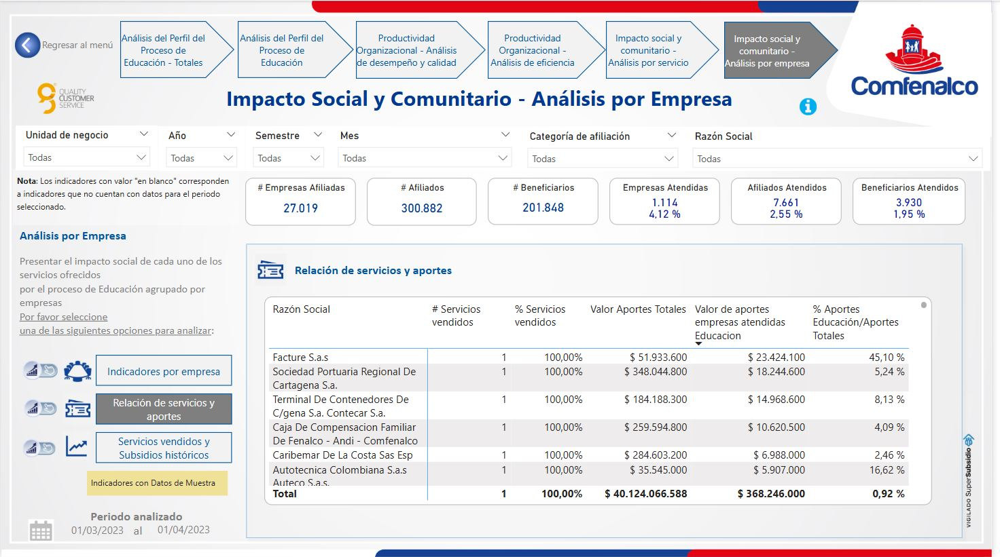
Objetivo de la Visualización¶
Mostrar la correspondencia entre los servicios educativos adquiridos por cada empresa y los aportes económicos realizados, permitiendo identificar el grado de involucramiento y retorno social de las organizaciones vinculadas al proceso de Educación.
Estructura y Elementos Principales¶
| Sección | Descripción |
|---|---|
| Panel Lateral Izquierdo | Menú Análisis por Empresa con tres opciones: Indicadores por empresa, Relación de servicios y aportes (seleccionado) y Servicios vendidos y Subsidios históricos. Incluye una breve explicación y un aviso sobre datos de muestra. |
| Tarjetas KPI Superiores | Tarjetas que aportan contexto institucional (empresas afiliadas, afiliados, beneficiarios, empresas atendidas, afiliados atendidos, beneficiarios atendidos) antes de profundizar en la relación servicios‑aportes. |
| Tabla “Relación de Servicios y Aportes” | Tabla central que lista cada empresa, número de servicios vendidos, porcentaje de participación, valor de aportes totales y valor de aportes destinados a educación, además del porcentaje que esto representa sobre el total de aportes. |
| Icono de Información | Botón contextual que despliega definiciones y criterios de cálculo para interpretar correctamente los valores de servicios y aportes. |
| Pie de Página | Franja inferior con la referencia temporal del análisis y líneas de color corporativo que garantizan la coherencia visual con los demás tableros. |
Beneficios para la Gestión¶
- Análisis de Contribución vs. Beneficio: Permite comparar el valor de los aportes realizados por cada empresa con los servicios educativos adquiridos, evaluando el equilibrio entre inversión y retorno social.
- Detección de Oportunidades de Alianza: La tabla facilita identificar organizaciones con alto potencial de crecimiento en servicios o que requieren estrategias de fidelización.
- Priorización de Recursos Comerciales: Conocer qué empresas concentran mayor porcentaje de aportes ayuda a focalizar esfuerzos de acompañamiento y fortalecimiento institucional.
- Transparencia Financiera y Social: Centraliza la información de aportes y servicios, respaldando procesos de rendición de cuentas y planeación estratégica.
- Interactividad Analítica: Los filtros permiten segmentar la información por periodo, unidad o razón social, ofreciendo flexibilidad para diagnósticos específicos y reportes comparativos.
Impacto Social y Comunitario – Análisis por Empresa (Servicios Vendidos y Subsidios Históricos)¶
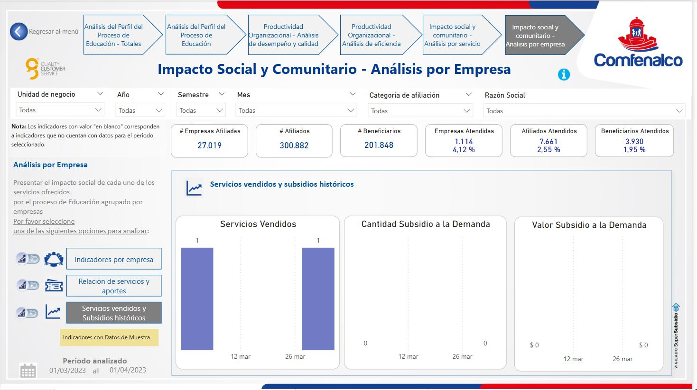
Objetivo de la Visualización¶
Mostrar la evolución temporal de los servicios educativos vendidos a las empresas y el historial de subsidios otorgados (cantidad y valor), permitiendo evaluar tendencias de demanda, cuantificar el apoyo económico brindado y detectar oportunidades para optimizar la relación entre la organización y el sector productivo.
Estructura y Elementos Principales¶
| Sección | Descripción |
|---|---|
| Panel Lateral Izquierdo | Menú Análisis por Empresa con tres opciones: Indicadores por empresa, Relación de servicios y aportes y Servicios vendidos y Subsidios históricos (seleccionada). Incluye un breve texto explicativo y un aviso de datos de muestra. |
| Tarjetas KPI Superiores | Tarjetas que brindan contexto institucional (empresas afiliadas, afiliados, beneficiarios, empresas atendidas, afiliados atendidos, beneficiarios atendidos) para enmarcar el análisis histórico. |
| Bloque “Servicios vendidos y subsidios históricos” | Contenedor central subdividido en tres tarjetas‑gráfico: Servicios Vendidos, Cantidad Subsidio a la Demanda y Valor Subsidio a la Demanda. Cada una muestra la evolución temporal en forma de barras, permitiendo comparar picos y valles de demanda o subsidio. |
| Icono de Información | Botón contextual que despliega definiciones y criterios de cálculo de los indicadores históricos y las unidades monetarias empleadas. |
| Pie de Página | Franja inferior con el periodo de análisis y líneas de color corporativo, manteniendo coherencia visual con las demás vistas. |
Beneficios para la Gestión¶
- Análisis de Tendencias de Demanda: Visualiza cómo varía la compra de servicios por parte de las empresas, apoyando la planificación de la oferta y las estrategias comerciales.
- Seguimiento del Apoyo Económico: Permite evaluar la cantidad y el valor de los subsidios otorgados a lo largo del tiempo, asegurando la transparencia y optimización de los recursos.
- Evaluación de la Relación Empresa‑Organización: Facilita identificar empresas con mayor recurrencia en compras o subsidios, orientando programas de fidelización o expansión de convenios.
- Priorización de Recursos: La información histórica respalda decisiones sobre asignación de presupuesto y esfuerzo comercial hacia periodos o sectores con mayor demanda potencial.
- Interactividad Analítica: Los filtros dinámicos ofrecen flexibilidad para segmentar datos por periodo, unidad o razón social, generando diagnósticos precisos y reportes comparativos.